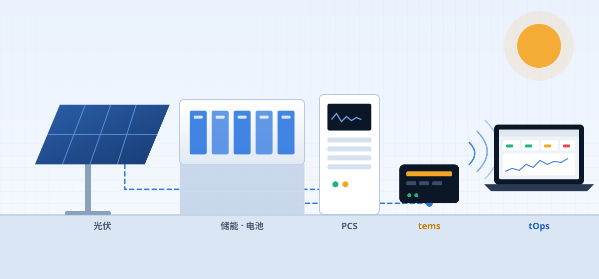

EMS · PCS 控制 & 远程运维
驱动设备的引擎，
驱动设备的引擎，
以及守护引擎的运维。
bronto 打造控制能源设备的引擎 tems、远程运维该引擎的工具 tOps，以及安全部署、更新现场软件并管理许可证的 tVault。您可以只选择需要的产品，也可以作为一整套方案一起导入。

PRODUCTS
控制 · 运维 · 部署，三款产品
tems 控制现场设备，tOps 远程运维这些 tems 服务器，tVault 负责所有程序的安装、更新与许可证。
EMS ENGINE
tems
EMS 服务器平台 · PCS 控制器引擎
- 通过 Modbus 等协议与现场设备通信并控制设备
- 以模块为单位配置事件、告警、历史记录和计划任务
- 支持从 x64 服务器到 ARM64 嵌入式控制器
tOps
tems 远程运维工具 · brontod + tdoctor
- 在一个界面查看多个现场的仪表盘与监控
- 远程进行进程控制、配置编辑、文件部署与备份
- 一次检查全部配置的环境检查 · 离线模式
- Android 应用 - 关闭应用也能收到通知，还可访问服务器文件和命令
- 한국어 · English · 日本語 · 中文，14 天免费试用
tVault
部署 · 更新 · 许可证平台
- 签名部署与自动更新 · 失败时自动回滚
- 环(部署阶段)与客户负责人的邮件审批
- 从版本、期限到到期行为，许可证集中管理
- 以客户为中心的 Web 控制台 · 按设备发送结果邮件
- 网站试用自动开通 · 手机推送通知
HOW IT WORKS
从现场设备到运维人员，全部连接
tems 接收设备信号并进行控制，tOps 远程管理 tems 服务器的状态与配置。所有这些程序的安装、更新与许可证由 tVault 负责。

现场
设施 · 设备
PCS、BMS、计量仪表、光伏逆变器、I/O
tems
控制引擎
设备通信 · 控制 · 事件 · 历史记录 · 计划任务
tOps
远程运维
brontod · 安装在 tems 服务器上的运维守护进程
tdoctor · 运维人员 PC 上的管理界面
人员
运维人员 · 工程师
状态确认、故障处理、配置变更、部署
NEW · tVault
新版本安全发布，客户服务器只装已批准的设备
我们将发布与部署分开。按内部 → 试点 → 客户的顺序逐步扩大，客户负责人在邮件收到的链接中选择设备和安装时间后批准。完成后，会发送包含各设备更新时间的结果邮件。


WHY BRONTO
选择 bronto 的理由
稳定的控制
按功能拆分的进程结构，一个功能出现问题不会波及整体。
远程运维
无需前往现场，即可完成状态确认、重启、配置变更乃至文件部署。
安全的更新
tVault 只将已签名的版本安装到已批准的设备上，失败时自动回滚。
开发商直接支持
亲自开发引擎和运维工具的团队，根据现场需求提供技术支持。
SOLUTIONS
哪种方案适合贵公司?
所需产品因业务形态而异。以下是最常被选择的方案。

储能运营商
需要 24 小时稳定运行多个站点的电池设备，并进行远程管理。
推荐方案tems + tOps 一体化

PCS 制造商
需要可内置于自家 PCS 的成熟控制器引擎。支持 ARM64 嵌入式环境。
推荐方案tems (+ tOps 可选)

电站运营商
需要在一处监控分散的现场，并在故障时迅速处理。
推荐方案tOps (+ tems)
PACKAGES
可单独导入，也可组合导入
根据现有环境，从需要的产品开始。之后也可以增加其他产品。
推荐
tems + tOps + tVault 一体化
从控制到运维一步到位
- 设备通信 · 控制引擎
- 事件 · 告警 · 历史记录 · 计划任务
- 多现场仪表盘 · 监控
- 配置编辑 · 进程控制 · 部署
- 用 tVault 管理部署、更新和许可证
- 从导入到运维的统一支持窗口
REFERENCES
应用案例
一起寻找适合您现场的方案
欢迎咨询导入方案、预约界面演示或提出技术问题。我们的负责人会直接与您联系。